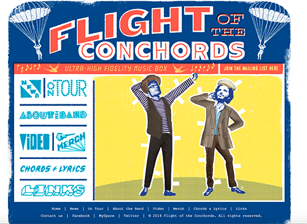
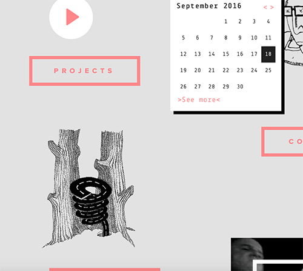
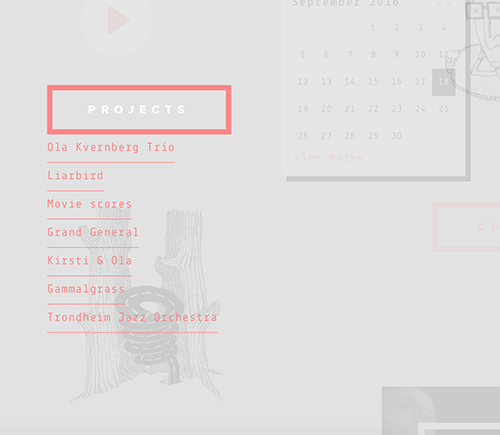

I am a student at Massachusetts College of Art and Design, studying graphic design. I love projects that challenge me in new ways and force me to gain new skills, whether design related or not. Although graphic design is a lot of graphic work these days, I also thoroughly enjoy working with my hands and making 3-dimensional work, whether book binding or light sculptural work. Some of my other interests include reading and being obsessed with all things animal- and nature-related
I feel that currently in the field of graphic design, it is becoming increasingly important to have at least basic knowledge of web design, and many internships seem to look for it. I also think it will be a really interesting class and will help build my design skills in a different way than working in print media. I'm interested in both websites as well as phone applications, and hope to gain at least a basic knowledge of design in these areas that I will be able to build on in the future, either in Web Design 2, an internship, or future career.
The design for this webpage is very clean and easy to digest, yet still visually interesting. I like how the photo on the home page scrolls up to reveal the rest of the page. The other pages of the site are equally clean, with each page having a sort of one-sentence heading that describes the purpose of the page.
This website has a very picture-heavy design, which focuses more on visuals than text, while still being informative about the company. The large header at the top of the page is eyecatching and leads you into the rest of the site.
The home page of this website is very simple, yet interesting. The focus on the picture makes it clear that this is not a company's website, but a person's, specifically an artist. The design of the other pages for music and photos are brief but compelling.
The design of this web page is so dynamic and interactive in a way that a lot of websites aren't, which is both interesting and refreshing. I particularly like how different pages can be found by mousing over the elements of the page.
It's interesting how the links to other pages on this site appear more decorative than functional. However, I'm not sure if it's the most useful in terms of usability, since they don't necessarily look like links or buttons.

Screenshot from Flight of the Conchords

Screenshot from OlakVernberg

Screenshot from OlakVernberg